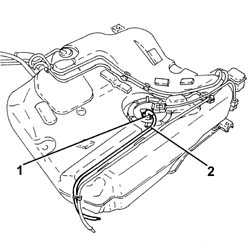
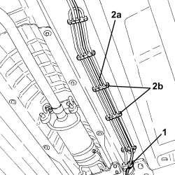
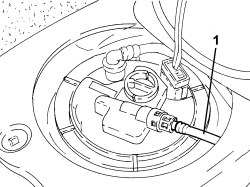
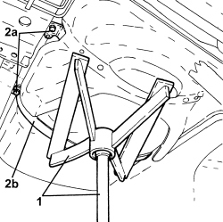
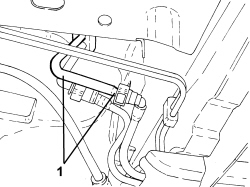

1040B36 REAR FUEL DELIVERY LINE - R.R
- Path
- Procedures > 10 ENGINE > 1040 FUEL TANK AND PIPES > 1040B FUEL SUPPLY/RETURN CIRCUIT PIPE > 1040B36 REAR FUEL DELIVERY LINE - R.R
- Kind
- repair procedure (removal / refitting; the operation number is the code)
- Applies to
- all engines; all production periods
- Interactive page
- https://sloeber94.github.io/elrnDB-fCrm/en/#/194000294
Applies to: engines: 1.8, 2.2; all production periods
 Removing
Removing
 Refitting
Refitting- Position the vehicle on a lift.
- Make sure that the ignition key is in the OFF position, then disconnect the battery terminal (-).
Description | Connector | |
|---|---|---|
- | Battery |
Op. 4450B08 RIGHT REAR WHEEL - R.R
Op. 7055B45 RIGHT REAR WHEEL ARCH LINER - R.R
Op. 1040A30 FUEL FILLER PIPE ASSEMBLY- R + R
Op. 1076B20 REAR EXHAUST SILENCER - R + R
Op. 1076B30 FRONT EXHAUST SILENCER - R + R
Op. 1040A10 FUEL TANK - R + R AND DECANT FUEL
1. Disconnect the rapid connector for the rear fuel supply pipe, submerged pump assembly side complete with level gauge.
2. Release the rear fuel supply pipe from the fastenings on the fuel tank and remove it.

Applies to: engines: 1.8, 2.2; all production periods
Refitting
Removing- Refit the rear fuel delivery pipe to its seat on the tank.
- Connect the rapid connector for the rear fuel supply pipe, submerged pump assembly side complete with level gauge.
Op. 1040A10 FUEL TANK - R + R AND DECANT FUEL
Op. 1076B30 FRONT EXHAUST SILENCER - R + R
Op. 1076B20 REAR EXHAUST SILENCER - R + R
Op. 1040A30 FUEL FILLER PIPE ASSEMBLY- R + R
Op. 7055B45 RIGHT REAR WHEEL ARCH LINER - R.R
Op. 4450B08 RIGHT REAR WHEEL - R.R
- Connect the negative battery terminal.
- Remove the vehicle from the lift.
Applies to: engines: 1.9 JTD 8v, 1.9 JTD 16v; all production periods
Removing
Refitting- Position the vehicle on a lift.
Op. 7050A33 REAR SEAT CUSHION SOUND DEADENING DEVICE/SPACER - R R
1. Undo the bolts (1a) and remove the access cover (1b) for the submerged pump assembly complete with level gauge.

Applies to: engines: 1.9 JTD 8v, 1.9 JTD 16v; all production periods
1. Disconnect the rapid connector for the rear fuel supply pipe, submerged pump assembly side complete with level gauge.

Applies to: engines: 1.9 JTD 8v, 1.9 JTD 16v; all production periods
1. Position a hydraulic jack with a suitable tool for supporting the fuel tank.
2. Undo the bolts (2a) fixing the fuel tank support belts (2b).
- Lower the fuel tank as far as necessary to gain access to the clip securing the rear pipe delivering fuel to the body.

Applies to: engines: 1.9 JTD 8v, 1.9 JTD 16v; all production periods
1. Disconnect the rapid connector for the rear fuel supply pipe, front fuel supply pipe side.
2. Remove the rear fuel delivery pipe (2a) after releasing it from fastenings (2b).

Applies to: engines: 1.9 JTD 8v, 1.9 JTD 16v; all production periods
Refitting
Removing- Refit the rear fuel delivery pipe to its seat and secure.
- Connect the rapid connector for the rear fuel supply pipe, front fuel supply pipe side.
- Secure the rear fuel delivery pipe with the fastening collars located under the fuel tank.
- Place the fuel tank in position and secure it tightening the bolts to the recommended torque.
Component | Fastening | dia | Value (daNm) | Validity |
|---|---|---|---|---|
Fuel tank | Bolt | M8 | (bodyshell side) 3.2 - 3.9 |
- Remove the hydraulic jack with the suitable tool for supporting the fuel tank.
- Connect the rapid connector for the rear fuel supply pipe, submerged pump assembly side complete with level gauge.
- Place the access cover to the submerged pump assembly complete with level gauge back in its housing and secure it using the bolts.
Op. 7050A33 REAR SEAT CUSHION SOUND DEADENING DEVICE/SPACER - R R
- Remove the vehicle from the lift.
Applies to: engines: 2.4 JTD 20v; all production periods
Removing
Refitting- Position the vehicle on a lift.
Op. 7050A54 REAR SEAT BACKREST FRAME - R.R.
Op. 7050A33 REAR SEAT CUSHION SOUND DEADENING DEVICE/SPACER - R R
1. Undo the bolts (1a) and remove the access cover (1b) for the submerged pump assembly complete with level gauge.

Applies to: engines: 2.4 JTD 20v; all production periods
1. Disconnect the rapid connector for the rear fuel supply pipe, submerged pump assembly side complete with level gauge.

Applies to: engines: 2.4 JTD 20v; all production periods
1. Position a hydraulic jack with a suitable tool for supporting the fuel tank.
2. Undo the bolts (2a) fixing the fuel tank support belts (2b).
- Lower the fuel tank as far as necessary to gain access to the clip securing the rear pipe delivering fuel to the body.

Applies to: engines: 2.4 JTD 20v; all production periods
1. Disconnect the rapid connector for the rear fuel supply pipe, intermediate fuel supply pipe side and remove it.

Applies to: engines: 2.4 JTD 20v; all production periods
Refitting
Removing- Place the rear fuel supply pipe in its housing and connect the rapid connector, intermediate fuel supply pipe side.
- Secure the rear fuel delivery pipe with the fastening collars located under the fuel tank.
- Place the fuel tank in position and secure it tightening the bolts to the recommended torque.
Component | Fastening | dia | Value (daNm) | Validity |
|---|---|---|---|---|
Fuel tank | Bolt | M8 | (bodyshell side) 3.2 - 3.9 |
- Remove the hydraulic jack with the suitable tool for supporting the fuel tank.
- Connect the rapid connector for the rear fuel supply pipe, submerged pump assembly side complete with level gauge.
- Place the access cover to the submerged pump assembly complete with level gauge back in its housing and secure it using the bolts.
Op. 7050A33 REAR SEAT CUSHION SOUND DEADENING DEVICE/SPACER - R R
Op. 7050A54 REAR SEAT BACKREST FRAME - R.R.
- Remove the vehicle from the lift.
Topics linked from this page (8)
- 1040A10 FUEL TANK - R + R AND DECANT FUEL
- 1040A30 FUEL FILLER PIPE ASSEMBLY- R + R
- 1076B20 REAR EXHAUST SILENCER - R + R
- 1076B30 FRONT EXHAUST SILENCER - R + R
- 4450B08 RIGHT REAR WHEEL - R.R
- 7050A33 REAR SEAT CUSHION SOUND DEADENING DEVICE/SPACER - R R
- 7055B45 RIGHT REAR WHEEL ARCH LINER - R.R
- A001 BATTERY